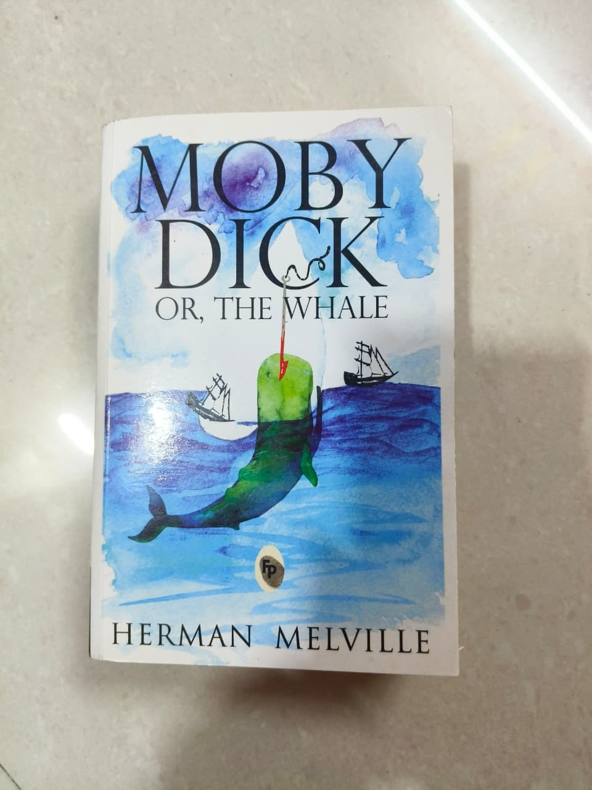

Some of my fav books
 This is about the legend of count dracula.
This is about the legend of count dracula.
 This is about Ronald who is chasing the man in black.
This is about Ronald who is chasing the man in black.

This is the ultimate story of revenge.
 This is story about a lonely man.
This is story about a lonely man.